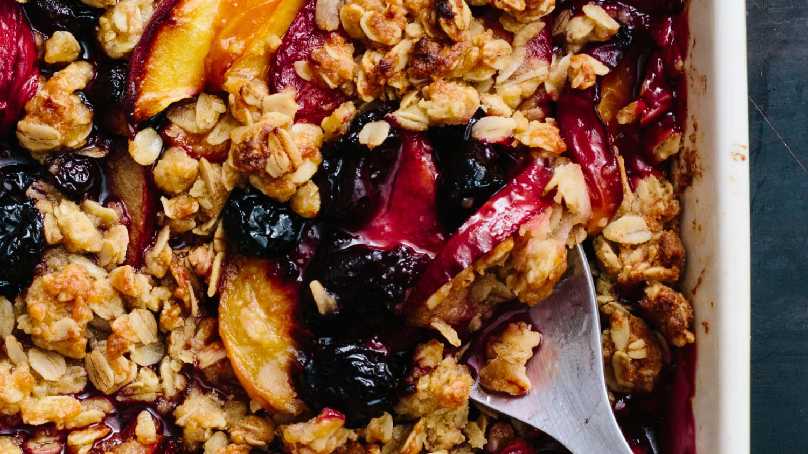

Fruit Crisp

Ingredients
- 1-2 cups of any fruit
- 1 cup of oats
- 1/3 cup of flour
- 1/2 cup of sugar
- Half stick of butter
Instructions
- Fill the bottom of a medium sized pie container with any fruit
- Mix the oats, flour, sugar, and butter into a small bowl
- Dump the mix over the fruit
- Cook for 30 minutes at 375 degrees
- Serve